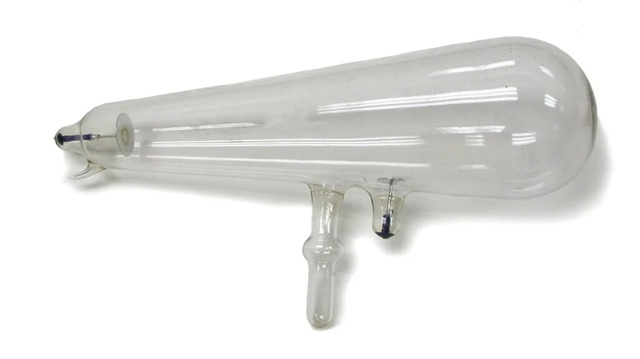
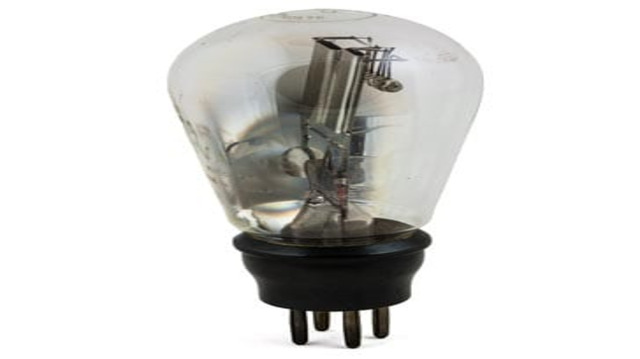
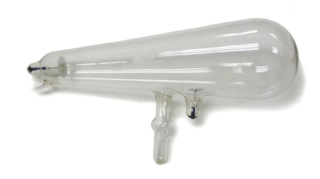
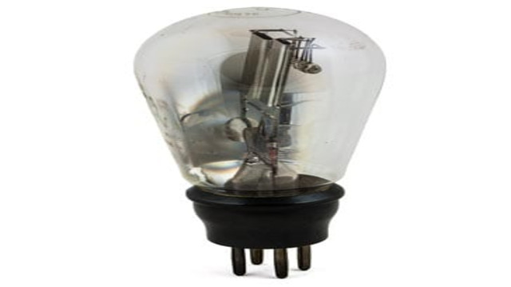

Válvula Geissler |
Tubo de Crookes |
Válvula Diodo |

|
 |  |
A válvula eletrônica também chamada de válvula termiônica, válvula á vácuo ou válvula de elétrons é o vovô do transistor, ela é um componente eletrônico que consiste basicamente por um invólucro de vidro, metal ou cerâmica á vácuo ou algum tipo de gás, com vários elementos metálicos internos chamados de anodo, catodo, grade e filamento.
Os inícios das pesquisas com válvulas eletrônicas se deram no século 19, os primeiros manuscritos e pesquisas sobre as válvulas datam de 1873 e foram realizados pelo cientista Frederick Guthrie. Podemos dizer que as primeiras foram as válvulas Geissler e os tubos de Crookes. Muitos cientistas pesquisaram as válvulas, entre eles Thomas Edison e Nikola Tesla. Mas a primeira válvula que alavancou a eletrônica foi a válvula diodo, ou seja de dois elementos, inventada por John Ambrose Fleming em 1904, com sua invenção o rádio e outros aparelhos eletrônicos puderam passar a existir e chegar as casas das pessoas de uma forma mais prática.
Válvula Geissler |
Tubo de Crookes |
Válvula Diodo |
|
|
 |  |
A válvula basicamente tem a mesma função de um transistor, mas com grande desvantagens em relação aos transistores, entre elas o seu tamanho, fragilidade, a temperatura e a tensão de trabalho. Quando o filamento da válvula termiônica é aquecido, ele emite elétrons que são atraídos pelo ânodo, gerando um fluxo de corrente elétrica. A grade, por sua vez, controla a intensidade desse fluxo de elétrons, permitindo que a válvula seja utilizada para amplificar sinais elétricos, modular frequências de rádio, entre outras aplicações...